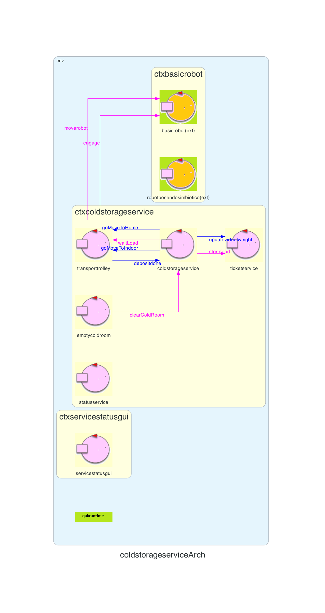
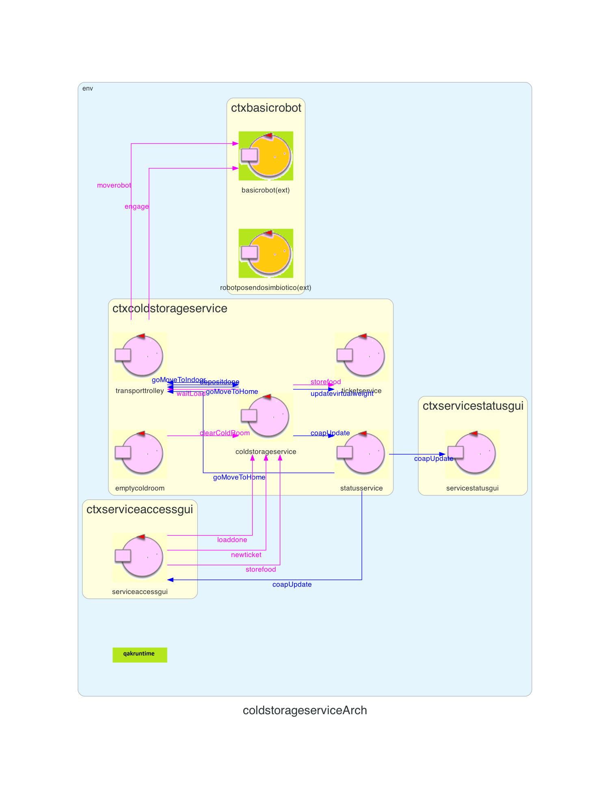
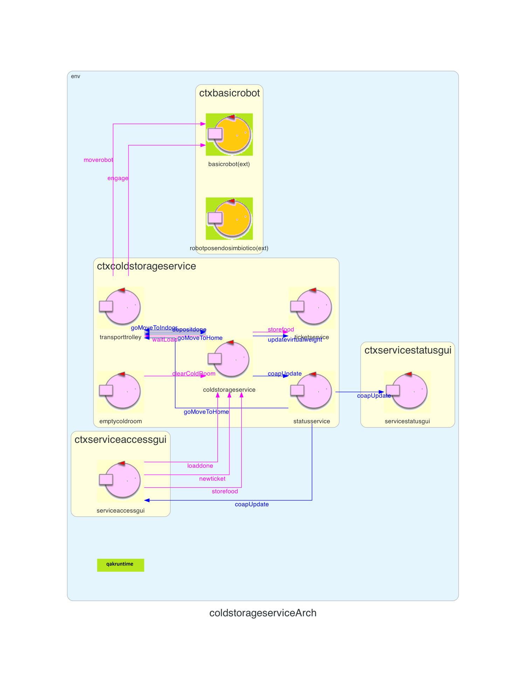

Introduction
Lo Sprint1 ha prodotto la seguente architettura:

Requirements
- a ServiceStatusGUI that allows a Service-manager (an human being) to supervises the state of the service.
A Service-manager migtht use the ServiceStatusGUI to see:
- the current state of the transport trolley and it position in the room;
- the current weigth of the material stored in the ColdRoom;
- the number of store-requests rejected since the start of the service.
Goal di questo sprint:
- Realizzazione delle seguenti GUI: ServiceAcessGUI e ServiceStatusGUI
Requirement analysis
- Stato robot: lo stato del robot può essere "libero" o "occupato". In particolare si trova nello stato occupato durante la deposit action, altrimenti sarà libero
- Posizione robot: la posizione viene definita dalle coordinate (X, Y) del robot all'interno della mappa
- Ticket rifiutato: si intende ticket rifiutato sia un ticket scaduto sia un ticket inesistente
Analisi del Problema
Statusservice
Viene modellato questo attore per gestire l'aggiornamento dei dati da inviare alle gui. Per farlo osserva l'attore robotposendosimbiotico, fornito dal committente insieme al BasicRobot, per ottenere la mappa e la posizione attuale del robot, e osserva il coldstorageservice per ottenere le informazioni sul numero di ticket rifiutati, il peso occupato nella cold room e lo stato del robot.Architettura logica

Dall'architettua logica possiamo evidenziare i seguenti componenti -> rifare togliendo serviceaccessgui:
Dall'architettua logica possiamo evidenziare i seguenti componenti -> rifare togliendo serviceaccessgui:
- ColdStorageService: riceve dal fridge truck le richieste di verifica di validità dei ticket che vengono successivamente inoltrate al TicketService, riceve le richieste di svuotamento dall'EmptyColdRoom e invia i messaggi al TransportTrolley per iniziare la deposit action
- TransportTrolley: invia al BasicRobot i messaggi necessari per eseguire la deposit action
- TicketService: si occupa di gestire le richieste per l'emissione di nuovi ticket e di verificarne la validità nel momento in cui viene presentato dal fridge truck
- EmptyColdRoom: si occupa di svuotare periodicamente la coldroom inviando un apposito messaggio al ColdStorageService
- Servicestatusgui: è la gui utilizzata dal Service-manager per tenere traccia dello stato del servizio
- Statusservice: si occupa di inivare i dati aggiornati alle gui
- BasicRobot: esegue i comandi ricevuti dal TransportTrolley
- Robotposendosimbiotico: utilizzato per ottenere aggiornamenti riguardanti la mappa e la posizione del robot
Progettazione
Aggiornamento dati GUI
Statusservice invia, utilizzando il protocollo Coap, i dati aggiornati al server, il quale attraverso l'utilizzo di socket si occupa di aggiornare le gui. L'attore Statusservice durante l'arco di vita si può trovare in due stati:
State doObserve{
println("print doObserve")
printCurrentMessage
[#
val msg = currentMsg.msgContent().drop(11).dropLast(1)
val resource = msg.split(", ")[0]
val value = msg.dropWhile { it != ',' }.drop(2)
if( resource == "coldstorageservice" ) {
if( value.startsWith("robotfree") ) {
RobotFree = value.split("(")[1].dropLast(1)
} else if( value.startsWith("ticketrejected") ) {
RejectedTickets++
} else if( value.startsWith("weightUpdate") ) {
CurrentWeightReal = value.split("(")[1].dropLast(1).toInt()
}
} else if( resource == "robotposendosimbiotico" ) {
if( value.startsWith("|") ) {
Map = value.substring(0, value.lastIndexOf("\n"))
var temp = value.substring(value.lastIndexOf("\n")).split(")")[0].split("(")[1]
PosX = temp.split(",")[0].toInt()
PosY = temp.split(",")[1].toInt()
}
}
#]
updateResource [# "status($PosX, $PosY, $RobotFree, $CurrentWeightReal, $RejectedTickets)" #]
}
L'attore transita in questo stato quando uno degli attori osservati effettua un update di una risorsa. Tali informazioni vengono
collezionate dall'attore e poi inviate alle gui seguendo la seguente struttura: status($PosX, $PosY, $RobotFree, $CurrentWeightReal, $RejectedTickets)
State sendMap{
updateResource [# "status($Map, $PosX, $PosY, $RobotFree, $CurrentWeightReal, $RejectedTickets)" #]
}
Questo stato viene raggiunto a seguito della richiesta iniziale inviata al caricamento della servicestatusgui. Grazie a questo stato
l'attore oltre alle altre informazioni invia anche la struttura della mappa permettendo alla gui di costruirla dinamicamente. Si è scelta questa soluzione
per rendere la gui indipendente dalla mappa.
L'attore Statusservice non ha alcuna informazione riguardante la mappa. Per questo motivo, quando viene avviato il contesto del coldstorageservice, invia al TransportTrolley
un messaggio per richiedere al BasicRobot un movimento fittizio in modo tale da ottenere dal robotposendosimbiotico le informazioni necessarie per poter costruire la mappa.
forward transporttrolley -m goMoveToHome : goMoveToHome(0)
Progettazione della gui
Si è deciso di sostiure l'attore servicestatusgui con un componente in grado di comunicare con il sistema tramite una connessione TCP e per farlo è stato utilizzato il framework Spring.Clean architecture
Per la progettazione si è seguito il principio dell' inversione delle dipendenze secondo il quale i componenti di alto livello non devono dipendere da componenti di livello più basso. Per rispettare tale principio è stata creata un'interfaccia per definire le istruzioni, implementate da un'apposita classe, che vengono utilizzate poi dal controller spring per interagire con il sistema.
public interface ServiceStatusUseCaseInterface {
public void init();
public void getMap() throws IOException;
}
Architettura logica finale
Dato che lo sviluppo delle gui è avvenuto in parallelo la seguente architettura tiene in considerazione anche la serviceaccessgui.
Metamodello qak

Metamodello qak
